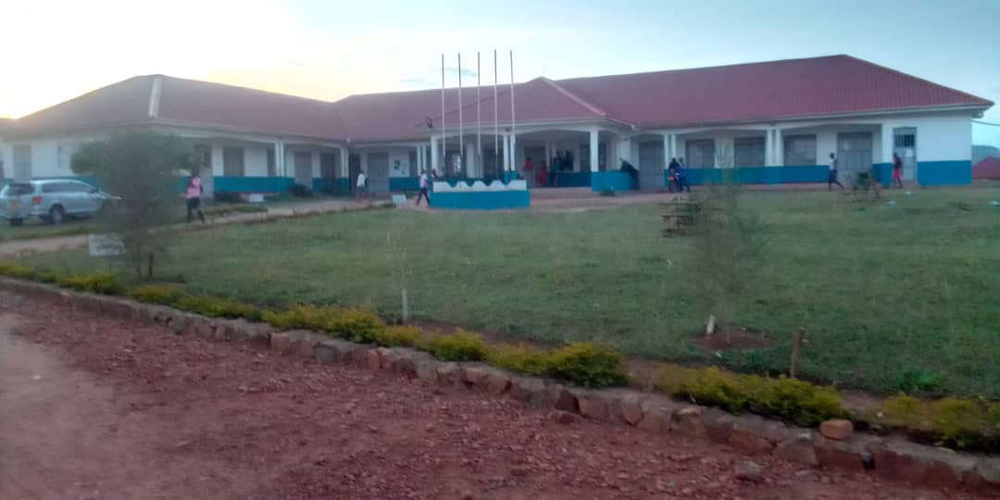
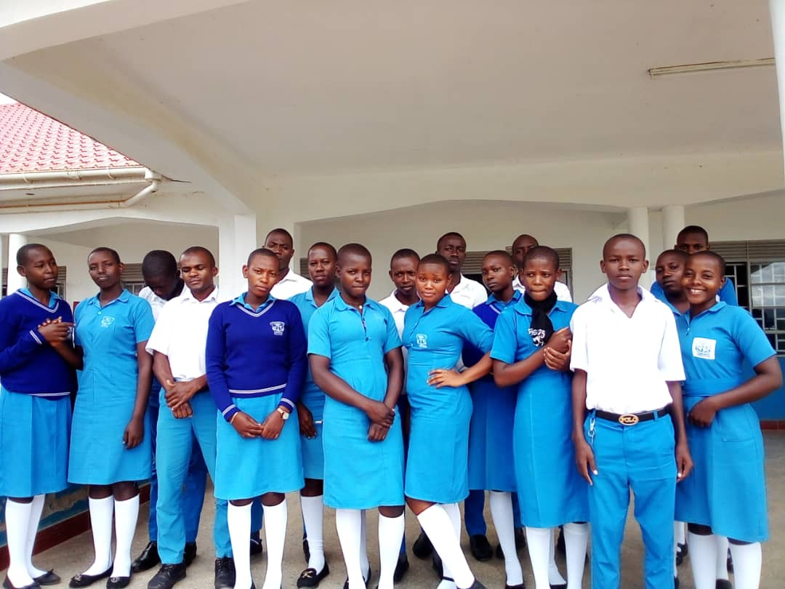
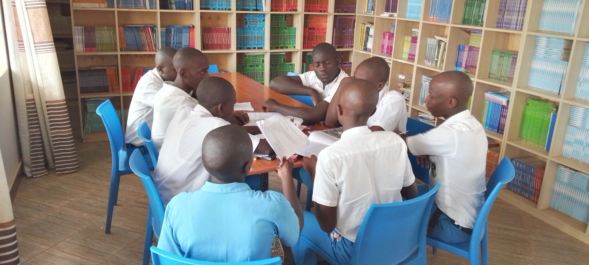
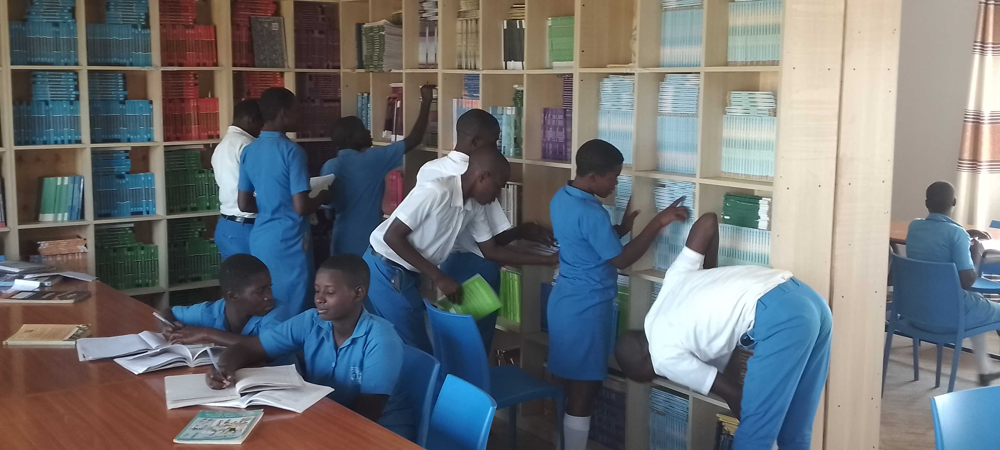
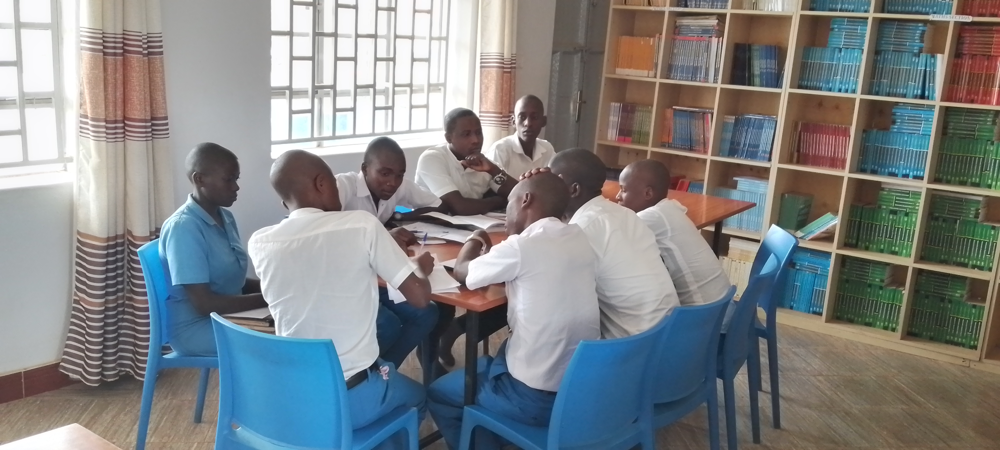
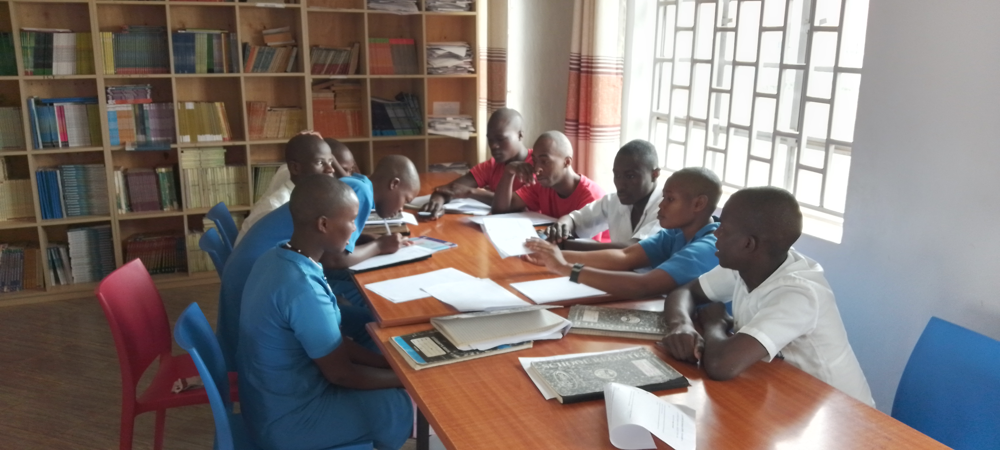
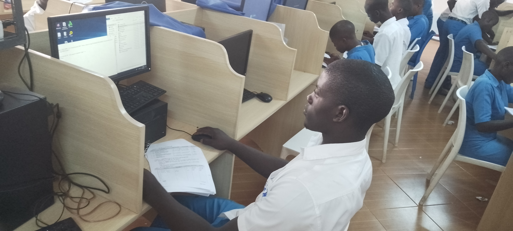

LYANTONDE SECONDARY SCHOOL - KASAMBYA
P.O.BOX 67, LYANTONDE-UGANDA
TEL: 0782800181 /0754 769577
Email: lyantondesecondaryschool@gmail.com
| HOME | ACADEMICS | PROJECTS | SPORTS | ONLINE FORM |
ACADEMICS AT LYANTONDE SS
| 1. class rooms: Lyantonde ss has preciuos class rooms were our students receive instructions from s.1 to s.4 (we under-take a variety of subjects with streams then A'level also streamed i.e Arts & Sciences classes and we offer a variety of subject combinations to cater for all learners' needs. |  |
| 2. Library: School library is where students access books, reference materials, and educational resources. It is stocked with a wide availability of books and the quality materials for reference in current and New Secondary school curriculum (CBC). |
  |
| 3. Computer Lab: The school has two computer labs well equipped with computers and internet access. These labs help students develop digital literacy skills and access online educational resources. The labs also help teachers to make their own research. |
    |
| 4. Laboratories: Science laboratories are essential for conducting practical experiments and hands-on learning in subjects like biology, chemistry, and physics. The school has a well-equipped laboratories, and students have no limitations in conducting experiments. |
  |
| 5. Scripture Union Club: Mission: To preach the word of God & spread the Good news among Youths in all Nations. Motto: " Your word is a lamp to guide me & a light for my path" |
    |
| 6. Dormitories/Hostels: In boarding schools, dormitories or hostels are provided to accommodate students who live far from the school. These facilities offer a residential environment for students during the school term. |


 |
|
Copyright
© 2024 Lyantonde Secondary
School- Kasambya
Designed by [Ssalongo Nyombi John]
|